전자기기기능장 (2002-07-21 기출문제)
1과목: 임의구분
1. 자속밀도 0.5[Wb/m2 ]의 평등자계 내에 자계 방향과 직각으로 높여진 길이 5[cm]의 직선도체에 1[A]의 전류를 흘렸을 때 도체가 받는 힘 [N]은?
- 0[zero]
- 0.01
- 0.02
- 0.025
(정답률: 76%)

2. 내부저항 r[Ω]이고, 기전력이 E[V]인 건전지의 등가회로는?
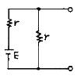
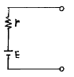
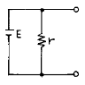
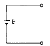
(정답률: 95%)
3. 그림의 회로에서 단자 ab에 나타나는 전압 Vab는 몇 [V]인가?
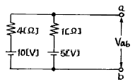
- 5
- 6
- 8
- 10
(정답률: 75%)
4. 그림에서 스위치(S.W)를 닫을 때의 충전전류 i(t)[A]는?
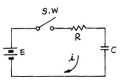
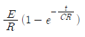
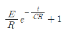
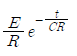
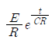
(정답률: 94%)
5. 그림과 같이 △결선을 Y결선으로 변환했을 때 Rc의 값은?
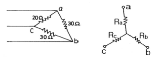
- 7.5[Ω]
- 11.2[Ω]
- 15[Ω]
- 20[Ω]
(정답률: 92%)
6. 직류 전동기의 종류에 해당되지 않는 것은?
- 유도 전동기
- 직권 전동기
- 분권 전동기
- 복권 전동기
(정답률: 89%)
7. 유도전동기의 회전력은?
- 단자 전압에 정비례
- 단자 전압의 1/2승에 비례
- 단자 전압의 2승에 비례
- 단자 전압의 3승에 비례
(정답률: 90%)
8. 그림과 같은 회로에서 부하 임피던스 Z를 얼마로 할 때 부하에 최대 전력이 공급되는가?
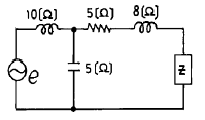
- 5+j2
- 5-j2
- 5+j8
- 5-j8
(정답률: 72%)
9. 다음 회로에서 I1과 I2와의 위상차는? (단, R=XC이다.)
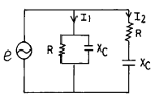
- 0°
- 45°
- 90°
- 135°
(정답률: 90%)
10. 그림과 같은 회로에서 저항 R에 흐르는 전류는?
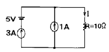
- 3[A]
- 4[A]
- 5[A]
- 6[A]
(정답률: 84%)
11. 진공 중에 Q1[C], Q2[C]의 전하(電荷)가 r[m] 떨어져 있을 때 작용하는 힘 F[N]는?
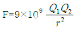
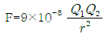
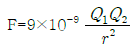
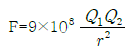
(정답률: 78%)
12. 그림의 회로에서 5[Ω]의 저항에 흐르는 전류는 몇 [A] 인가?
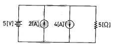
- 1
- 2
- 3
- 4
(정답률: 93%)
13. 최대치가 A인 정현파의 전파정류의 실효치는?
- 0.5 A
- 0.707 A
- 1 A
- 1.414 A
(정답률: 78%)
14. 광전효과에서 방출된 전자의 에너지에 대한 설명 중 옳은 것은?
- 빛의 세기에 비례한다.
- 빛의 주파수에 비례한다.
- 빛의 속도에 비례한다.
- 빛의 세기에 반비례한다.
(정답률: 72%)
15. 부하가 증가할 때 증폭기의 입력 저항(Ri)이 감소하는 것은?
- CB 증폭기
- CE 증폭기
- CC 증폭기
- CE와 CC 증폭기
(정답률: 91%)
16. 그림과 같은 정류회로에서 100[V]의 교류전압을 가했을 때 직류 출력전압은 약 얼마인가? (단, 무부하 상태임.)
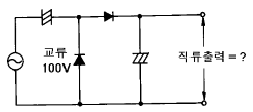
- 100[V]
- 141[V]
- 200[V]
- 282[V]
(정답률: 65%)
17. 아래의 펄스 발생 회로의 주파수는?
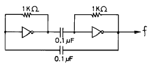
- 700[Hz]
- 350[Hz]
- 14[kHz]
- 7[kHz]
(정답률: 78%)
18. 다음은 다이오드와 트랜지스터를 이용한 DTL회로이다. Y=f(A,B,C)라 할 때 f(A,B,C)는?
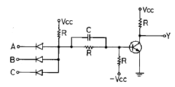
- ABC
- A+B+C
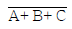
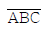
(정답률: 64%)
19. 마이크로컴퓨터에서 정보를 전송하는 선(線)은?
- 어드레스 버스
- 데이터 버스
- 제어 버스
- 인터럽트
(정답률: 91%)
20. 아래의 논리회로와 등가인 논리 게이트는?
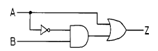
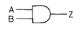
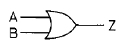
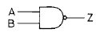
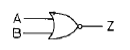
(정답률: 86%)
2과목: 임의구분
21. JK 플립플롭에서 J=1, K=1 일 때 클럭 펄스가 들어가면 출력 Q는?
- 0
- 1
- Q
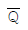
(정답률: 81%)
22. 순서 논리 회로(sequential logic circuit)의 구성을 나타낸 것은?
- 감산 회로와 논리곱 회로
- 가산 회로와 논리합 회로
- 조합 회로와 논리 소자
- 조합 회로와 기억 소자
(정답률: 79%)
23. EXCLUSIVE NOR GATE는 어느 것과 같은가?
- ADDER
- COMPARATOR
- SUBTRACTOR
- DECODER
(정답률: 93%)
24. 16개의 address를 가진 processor를 이용한 장비에서 직접적으로 addressing을 할 수 있는 address 수는 몇 개인가?
- 65,536
- 65,535
- 256
- 255
(정답률: 82%)
25. 10진수 (28)10을 8자리(Bit)의 2진수로 변환하되 2의 보수법으로 표시하면?
- 00011100
- 11100011
- 11100100
- 11100010
(정답률: 79%)
26. 반가산기에서 자리올림(carry)을 바르게 나타낸 것은?
- A+B
- AㆍB
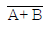
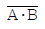
(정답률: 84%)
27. 다음 그림과 같은 NAND 게이트로 구성되는 RS 플립플롭 회로에서 R 및 S의 입력이 각 각 어떤 상태일 때 금지 입력(부정)인가?
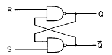
- R=0, S=0
- R=0, S=1
- R=1, S=0
- R=1, S=1
(정답률: 52%)
28. 아래에서 비동기식 카운터는?
- 리플 카운터
- 동기 카운터
- 조합형 카운터
- 존슨 카운터
(정답률: 80%)
29. 전가산기 논리 회로를 구성하기 위하여 필요한 것은?
- 반가산기 2개
- 반가산기 2개와 OR 1개
- 반가산기 3개
- 반가산기 2개와 AND 1개
(정답률: 91%)
30. 테이프 레코더 구성 요소에서 모터에 의해 일정한 스피드로 회전하는 축은?
- 캡스턴
- 테이크 업.릴
- 가이드 롤러
- 핀치 롤러
(정답률: 88%)
31. 헤테로다인 중계 방식의 특징이 아닌 것은?
- 변ㆍ복조에 의한 변형이 없다.
- 분지 삽입이 용이하다.
- 중간 주파 증폭기를 갖는다.
- 장거리 간선에 적당하다.
(정답률: 82%)
32. 아래 그림은 컬러 TV의 주파수 스펙트럼이다. (A)의 주파수 명칭은?
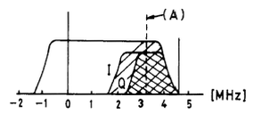
- 영상반송파
- 휘도신호
- 색부반송파
- 음성반송파
(정답률: 80%)
33. 다음은 일상적인 가정용 VTR에서 모든 조작이 정상적으로 조정된 상태로 사용 중 Tape 주행 시 재생 화면이 나오지 않을 경우 점검 할사항과 가장 관계있는 것은?
- TV Channel의 프리셋 미조절이 틀어져 있는가
- 안테나선이 VTR 입력과 TV입력에 정확하게 접속 되었는가
- VTR 튜너의 수신 Channel을 정확하게 조정했는가
- CAMERA/TUNER Switch가 CAMERA측에 있는가
(정답률: 83%)
34. 아래 수평 출력회로의 편향 동작 설명 중 옳지 않은 것은?
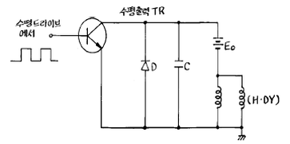
- 편향 코일에 전자에너지가 축적되어 있으므로 코일 전류는 급격히 감소할 수 없고, 공진용 콘덴 서 C를 충전하면서 증가한다.
- C의 충전이 끝나고 전류가 0 이 된다.
- C의 방전이 끝나지만 이 때 코일에 흐르는 전류는 역방향으로 최대가 된다.
- 편향 코일에 전류는 직선적으로 증가한다.
(정답률: 57%)
35. 재생용 EQ(Equalizer) 회로의 특성을 올바르게 표현한 것은?
- 저역의 이득을 낮추고, 고역의 이득을 올린다.
- 중역과 고역의 이득을 올린다.
- 저역과 중역의 이득을 올린다.
- 저역의 이득을 올리고, 고역의 이득을 낮춘다.
(정답률: 85%)
36. 라운드니스 컨트롤(Loudness Control) 회로의 특성을 가장 올바르게 설명한 것은?
- 저역 특성만을 올려주기 위한 회로이다.
- 고역 특성만을 올려주기 위한 회로이다.
- 저역과 고역 특성을 올려주기 위한 회로이다.
- 중역 특성을 올려주기 위한 회로이다.
(정답률: 74%)
37. 주파수 특성이 평탄하고 음질이 좋아 가장 많이 사용되는 스피커는?
- 전자형
- 압전형
- 정전형
- 동전형
(정답률: 93%)
38. 레코드플레이어에서 톤 암(Tone Arm)의 부속품 가운데 암의 축에 비틀려는 힘의 작용을 막기 위한 것은?
- 암 리프터(Arm Lifter)
- 인사이드 포스 캔슬러(Inside force canceler)
- 암 베이스(Arm base)
- 래터럴 밸런서(Lateral Balancer)
(정답률: 86%)
39. 아래의 마이크 가운데 주파수 특성이 보편적으로 제일 좋은 것은?
- 콘덴서 형
- 크리스털 형
- 다이나믹 형
- 카본 형
(정답률: 88%)
40. 스피커의 출력 음압 레벨을 측정하기 위해 사용되는 계측기가 아닌 것은?
- 와우ㆍ플러터 메터
- 표준 마이크
- 음압계
- 신호발생기
(정답률: 94%)
3과목: 임의구분
41. 그림과 같은 전동기는?
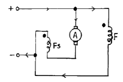
- 직류 분권 전동기
- 가동 복권 전동기
- 차동 복권 전동기
- 3상동기 전동기
(정답률: 66%)
42. 자유 공간에서 반파 안테나의 방사 전력이 100[W] 일 때, 최대 방사방향으로 5[km] 떨어진 지점에서의 전계강도는 약 몇 [mV/m]인가? (단, 반파 안테나의 방사저항 Rr은 73.13[Ω]이고, 방사 전계 E는 전류를 I, 거리를 d 라 할 때 E=60I/d이다.)
- 5
- 14
- 26
- 70
(정답률: 44%)
43. 가청주파수 대역을 20[Hz]-20[kHz]라고 할 때 아날로그 신호를 디지털로 변환하기 위한 최저 표본화 주파수는 몇 [kHz] 인가?
- 10
- 20
- 40
- 80
(정답률: 84%)
44. 선간 전압 100[V]의 3상 전원에 2.1[kW]의 부하를 걸어줄 때, 선전류가 17.3[A]흘렀다. 부하에서의 역률은 약 얼마인가?
- 0.5
- 0.6
- 0.7
- 0.97
(정답률: 43%)
45. 프로그램 수행 중에 외부에서 예기치 않은 일이 발생하여 그것에 대한 처리를 우선적으로 요구하는 것은?
- 인터럽트(interrupt)
- DMA
- Polling
- Stack
(정답률: 79%)
46. 다음 설명 중 옳지 않은 것은?
- AM 변조된 전파를 가청주파수로 고치는 것은 제2검파기 이다.
- 수신기의 AGC 회로에서 RC 값이 너무 크면 속도가 빠른 페이딩을 따르지 못한다.
- 수신기의 동조회로에서 Q가 너무 크면 충실도가 나빠진다.
- 수신기의 감도를 크게 하기 위해서 차단주파수가 낮은 TR을 사용한다.
(정답률: 59%)
47. 다음 설명 중 옳지 않은 것은?
- UJT는 자기 회복 능력이 있다.
- DIAC은 브레이크 오버 전압 이상의 펄스를 가하면 통전된다.
- CdS는 입사되는 빛에 의해 저항값이 변한다 .
- TR, 다이오드, 저항 등을 작은 Si 칩 안에 배선해 놓은 것이 모노리딕 IC이다.
(정답률: 83%)
48. 누산기의 설명으로 옳은 것은?
- CPU가 해석한 명령어를 기억한다.
- CPU내에 있는 레지스터로서 연산결과를 일시적으로 기억한다.
- 메모리 소자 내에 있는 레지스터로서 인터럽트 주소를 저장한다.
- CPU의 명령 순서를 기억한다.
(정답률: 81%)
49. 지정된 메모리 번지 내용을 누산기 등의 레지스터로 옮기는 명령은?
- 로드 명령
- 스토어 명령
- 전송 명령
- 교환 명령
(정답률: 70%)
50. 다음은 무슨 회로인가? (단, CR시정수가 입력 펄스폭보다 작다.)
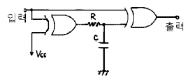
- 시미트 트리거 회로
- 감산기 회로
- 단안정 발진 회로
- 주파수 체배 회로
(정답률: 89%)
51. 채터링(Chattering) 방지 회로로 쓰이는 것은?
- 래치 회로
- 시미트 트리거 회로
- 매트릭스 회로
- 멀티플렉서 회로
(정답률: 79%)
52. 전류와 자장의 세기와의 관계를 나타내는 법칙은?
- 옴(Ohm)의 법칙
- 키르히호프(Kirchhoff)의 법칙
- 비오-사바르(Biot-Savart)의 법칙
- 렌쯔(Lenz)의 법칙
(정답률: 81%)
53. 신호 대 잡음비에 대한 설명 중 옳지 않은 것은?
- 신호전압과 잡음전압과의 비를 말한다.
- S/N비가 작을수록 잡음이 상대적으로 적다는 것을 의미한다.
- 일반적으로 재생 증폭기의 S/N비는 60[dB]정도 필요하다.
- 규정된 세기의 입력 신호를 가하여 얻어진 출력전압과 무신호시에 출력되는 전압과의 비이다.
(정답률: 86%)
54. AM 수신기의 감도를 높이기 위하여 고주파 증폭을 크게하면 발진이 일어난다. 발진을 방지하기 위한 방법은?
- 저주파 증폭을 크게 한다.
- 저주파 증폭을 작게 한다.
- 수신 주파수를 영상 주파수로 바꾸어 증폭한다.
- 수신 주파수를 중간 주파수로 바꾸어 증폭한다.
(정답률: 90%)
55. 공급자에 대한 보호와 구입자에 대한 보증의 정도를 규정해 두고 공급자의 요구와 구입자의 요구 양쪽을 만족하도록 하는 샘플링 검사방식은?
- 규준형 샘플링 검사
- 조정형 샘플링 검사
- 선별형 샘플링 검사
- 연속생산형 샘플링 검사
(정답률: 68%)
56. 표는 어느 회사의 월별 판매실적을 나타낸 것이다. 5개월 이동평균법으로 6월의 수요를 예측하면?
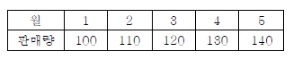
- 150
- 140
- 130
- 120
(정답률: 80%)
57. u 관리도의 관리상한선과 관리하한선을 구하는 식으로 옳은 것은?
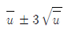
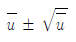
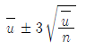
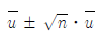
(정답률: 85%)
58. 도수분포표를 만드는 목적이 아닌 것은?
- 데이터의 흩어진 모양을 알고 싶을 때
- 많은 데이터로부터 평균치와 표준편차를 구할 때
- 원 데이터를 규격과 대조하고 싶을 때
- 결과나 문제점에 대한 계통적 특성치를 구할 때
(정답률: 61%)
59. 설비의 구식화에 의한 열화는?
- 상대적 열화
- 경제적 열화
- 기술적 열화
- 절대적 열화
(정답률: 79%)
60. 모든 작업을 기본동작으로 분해하고 각 기본동작에 대하여 성질과 조건에 따라 정해놓은 시간치를 적용하여 정미시간을 산정하는 방법은?
- PTS 법
- WS 법
- 스톱워치법
- 실적기록법
(정답률: 88%)
주어진 값에 대입하면 F = 0.5 [Wb/m2] × 1 [A] × 0.⑤ [m] = 0.025 [N]이 됩니다. 따라서 정답은 "0.025"입니다.